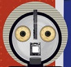

VQA based on spatial properties
Q: Where is the chair positioned in relation to the walking subject?
Choices: A. Beside him B. Behind him C. Directly in front of him D. Carried on his back
GT: C. Directly in front of him

LITE-Event: Directly in front of him.VQA based on visibility properties
Q: Are the circular fixtures between the slats turned on or off?
Choices: A. They are brightly illuminated B. They are completely dark C. They are flashing rapidly D. Unclear
GT: A. They are brightly illuminated.
LITE-Event: They are brightly illuminated.
VQA based on counting
Q:How many people are walking in the scene?
Choices: A. One B. Two C. Three D. Four
GT:B. Two
LITE-Event: Two.
VQA based on OCR
Q: What is the person doing in the dark?
Choices: A. Spot B. Unitree C. CyberDog D. Boston
GT: B. Unitree
LITE-Event: Unitree.